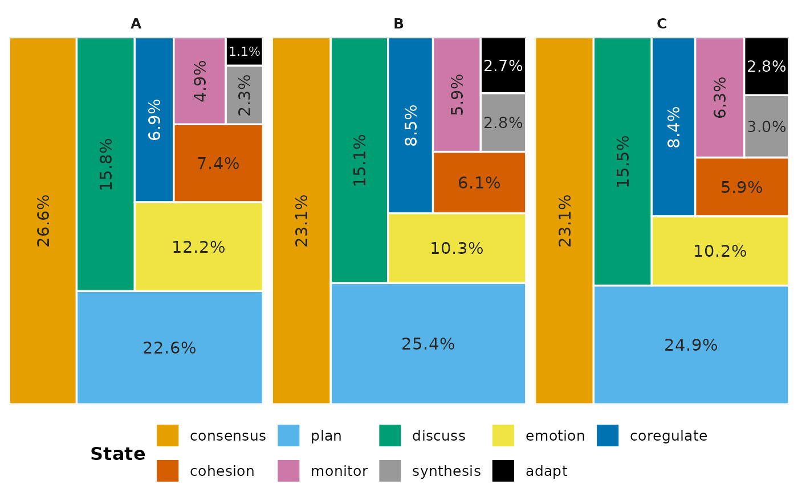

plot_state_frequencies() counts how often each state occurs in the
sequences behind a network and draws the shares, per group, as treemaps
or bars; it returns the chart together with the table of counts. It
takes a netobject, a netobject_group (one group per network), an
mcml (one group per cluster) or an htna network (one group per
actor). A single netobject is one group, "all", unless it carries
node groups, which then form the groups. Missing and empty cells are not
counted.
With style = "marimekko" (default), each group is a treemap whose
tiles have areas proportional to the states' shares within that group.
The groups of a netobject or netobject_group are panels of one plot,
with the states in the same order and colours in every panel. The actors
of an htna network and the clusters of an mcml usually have states
of their own, so each is drawn as a separate treemap with its own legend
(legend = "per_facet"). An mcml drawn with any other legend is a
single marimekko instead: one column per cluster, as wide as the
cluster's share of all events, with its states stacked by their share
within the cluster. With style = "bars", each group is a panel of
horizontal bars, one per state.
The shares describe how often states occur, not how they follow each
other. Two groups can have the same state mix and different
transitions; compare the networks for that, with permutation().
mosaic_plot() shows which cells of a netobject_group's
group-by-state table depart from independence.
Usage
plot_state_frequencies(x, ...)
# S3 method for class 'nestimate_facet_plot'
print(x, ...)
# S3 method for class 'nestimate_facet_list'
print(x, ...)
# S3 method for class 'netobject'
plot_state_frequencies(
x,
style = "marimekko",
metric = "prop",
label = "prop",
legend = "auto",
legend_dir = "auto",
legend_frame = "none",
sort_states = "frequency",
colors = NULL,
label_size = 3.5,
abbreviate = FALSE,
include_macro = FALSE,
combine = "auto",
ncol = NULL,
node_groups = NULL,
...
)
# S3 method for class 'htna'
plot_state_frequencies(
x,
style = "marimekko",
metric = "prop",
label = "prop",
legend = "auto",
legend_dir = "auto",
legend_frame = "none",
sort_states = "frequency",
colors = NULL,
label_size = 3.5,
abbreviate = FALSE,
include_macro = FALSE,
combine = "auto",
ncol = NULL,
node_groups = NULL,
...
)
# S3 method for class 'mcml'
plot_state_frequencies(
x,
style = "marimekko",
metric = "prop",
label = "prop",
legend = "auto",
legend_dir = "auto",
legend_frame = "none",
sort_states = "frequency",
colors = NULL,
label_size = 3.5,
abbreviate = FALSE,
include_macro = FALSE,
combine = "auto",
ncol = NULL,
node_groups = NULL,
...
)
# S3 method for class 'netobject_group'
plot_state_frequencies(
x,
style = "marimekko",
metric = "prop",
label = "prop",
legend = "auto",
legend_dir = "auto",
legend_frame = "none",
sort_states = "frequency",
colors = NULL,
label_size = 3.5,
abbreviate = FALSE,
include_macro = FALSE,
combine = "auto",
ncol = NULL,
node_groups = NULL,
...
)
# Default S3 method
plot_state_frequencies(x, ...)
# S3 method for class 'state_freq'
print(x, digits = 1, max_states = 20L, ...)
# S3 method for class 'state_freq'
plot(x, ...)
# S3 method for class 'state_freq'
as.data.frame(x, ...)Arguments
- x
The object to count: a
netobject,netobject_group,mcmlorhtnanetwork built from sequences. A network without sequence data raises an error; in anetobject_groupormcml, groups without it are left out. For theprint(),plot()andas.data.frame()methods of the result: thestate_freqobject; for theprint()methods of a per-panel figure: an object of classnestimate_facet_plotornestimate_facet_list.- ...
Not used by the
netobject,netobject_groupandhtnamethods; themcmlmethod raises an error for any argument it does not take. For theprint(),plot()andas.data.frame()methods of the result: ignored.- style
The chart.
"marimekko"(default) draws treemaps, or the cluster marimekko for anmcml(see Description);"bars"draws horizontal bars, the most frequent state on top whensort_states = "frequency", with one panel per group.- metric
For
style = "bars": what the bar length shows,"prop"(default), the share within the group, or"freq", the count. Treemap and marimekko areas always show the share within the group.- label
The text printed on each tile or bar, on one line:
"prop"(default) the share, as in"66.0%";"freq"the count, as in"1,234";"both"the two,"1,234 (66.0%)";"state"the state name;"all"the name and share,"Average (66.0%)";"none"no text.- legend
Where the colour legend goes:
"bottom","top","right","left","none"or"per_facet"."auto"(default) resolves to"none"for bars, whose axis names the states, to"per_facet"forhtnaandmcmltreemaps, and to"bottom"otherwise."per_facet"draws each group as its own treemap with its own legend (on the right with up to two panels, at the bottom with more), and its colours restart in every panel; it falls back to"bottom"when every group has the same states, and to a legend on the right for bars. It returns a combined figure or a list of plots, ascombinesets.- legend_dir
The direction of the legend's keys:
"auto"(default) lays them out horizontally for a legend on top or bottom and vertically on the left or right;"horizontal"and"vertical"force one.- legend_frame
"none"(default) draws the legend unframed;"border"draws a thin grey rectangle around it.- sort_states
The order of the states in the legend, the tiles and the bars:
"frequency"(default), the most frequent first;"alpha", alphabetical; or"none", the order of the table.- colors
Fill colours for the states, overriding the palette attached to
xwithset_state_colors()for this chart: an unnamed vector in state order (at least one per state) or a named lookup such asc(plan = "#0072B2")that overrides only the states named. DefaultNULL: the attached palette, or else the Okabe-Ito palette, recycled.- label_size
The size of the tile and bar labels; with ggfittext installed, the largest size, as labels shrink to fit their tiles. Default
3.5.- abbreviate
Whether to shorten the state names with
base::abbreviate(), which drops lower-case vowels and then letters from the end until a name fits, keeping the names distinct.FALSE(default) keeps the full names;TRUEshortens them to at least three characters; a positive whole number sets that minimum length. It applies to the labels, the legend and the returned table.- include_macro
For an
mcml: whether to add a"macro"group in front, holding the state counts over all clusters. DefaultFALSE. Ignored for the other classes.- combine
With per-panel legends:
"auto"(default) combines up to three panels into one figure and returns a list of plots, one per panel, for four or more, which knitr draws as separate figures at the chunk's size.TRUEalways combines them;FALSEalways returns the list. A combined figure, whether fromTRUEor from"auto"with up to three panels, needs gridExtra and raises an error without it;FALSEdoes not.- ncol
For a combined figure with per-panel legends: the number of columns. Default
NULL: one column per panel with up to two panels, two columns with more.- node_groups
A named character vector that maps states to broader groups, such as
c(plan = "Regulation", monitor = "Regulation"). The chart is then drawn and coloured by these groups, states not named keeping their own name; the returned table keeps one row per state. DefaultNULL.- digits
For
print()of the result: decimal places of the percentages. Default1.- max_states
For
print()of the result: the most states shown per group (default20); the rest are folded into one"(+k more)"row.state_distribution()gives the full table.
Value
A state_freq object. Printing it shows the event totals per
group and the share of each state within its group, then draws the
chart; plot() draws the chart alone. state_distribution() gives
the same counts from the network, with the full state names and, for
an mcml, without the macro group unless include_macro = TRUE.
The object holds the chart (a
ggplot; with per-panel legends either a combined figure, a gtable
of class nestimate_facet_plot, or a list of ggplots of class
nestimate_facet_list), the table (one row per group and state, with columns group,
state, count and proportion, the share within the group), and
the style, metric and source class of the call. The print()
methods return their input invisibly, plot() returns NULL
invisibly. Any other class raises an error, a tna model included;
draw a tna model with tna::plot_frequencies().
The state_freq object
In a knitr document, printing the object puts the table in the text and the chart in a figure of the chunk's size; a list of per-panel plots gives one figure per panel.
Examples
if (requireNamespace("ggplot2", quietly = TRUE)) {
data(group_regulation_long, package = "Nestimate")
nw <- build_network(group_regulation_long,
method = "relative", format = "long",
actor = "Actor", action = "Action",
order = "Time", group = "Course")
res <- plot_state_frequencies(nw)
print(res) # tidy frequency table in the console
plot(res) # ggplot chart
head(as.data.frame(res))
}
#> State frequencies (style = marimekko, source = netobject_group)
#> Total events: 27,533 | Groups: 3 | States: 9
#>
#> Per-group totals
#> group events share
#> A 12,390 45.0%
#> B 9,626 35.0%
#> C 5,517 20.0%
#>
#> Per-state proportions (within group)
#> group state count share
#> A consensus 3,298 26.6%
#> A plan 2,805 22.6%
#> A discuss 1,960 15.8%
#> A emotion 1,517 12.2%
#> A cohesion 923 7.4%
#> A coregulate 855 6.9%
#> A monitor 602 4.9%
#> A synthesis 290 2.3%
#> A adapt 140 1.1%
#> B plan 2,445 25.4%
#> B consensus 2,226 23.1%
#> B discuss 1,453 15.1%
#> B emotion 995 10.3%
#> B coregulate 817 8.5%
#> B cohesion 590 6.1%
#> B monitor 565 5.9%
#> B synthesis 274 2.8%
#> B adapt 261 2.7%
#> C plan 1,373 24.9%
#> C consensus 1,273 23.1%
#> C discuss 854 15.5%
#> C emotion 563 10.2%
#> C coregulate 461 8.4%
#> C monitor 349 6.3%
#> C cohesion 326 5.9%
#> C synthesis 165 3.0%
#> C adapt 153 2.8%

 #> group state count proportion
#> 1 A consensus 3298 0.26618241
#> 2 A plan 2805 0.22639225
#> 3 A discuss 1960 0.15819209
#> 4 A emotion 1517 0.12243745
#> 5 A cohesion 923 0.07449556
#> 6 A coregulate 855 0.06900726
#> group state count proportion
#> 1 A consensus 3298 0.26618241
#> 2 A plan 2805 0.22639225
#> 3 A discuss 1960 0.15819209
#> 4 A emotion 1517 0.12243745
#> 5 A cohesion 923 0.07449556
#> 6 A coregulate 855 0.06900726